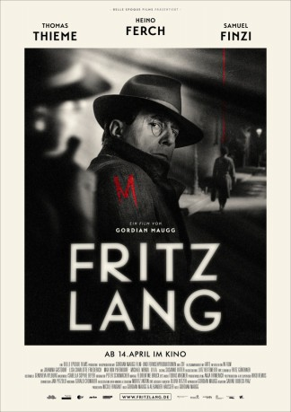

#7958 Fritz Lang - Der andere in uns
Alternativ: Fritz Lang
 
 IMDB-Wertung: 6.3 / 10
IMDB-Wertung: 6.3 / 10  Metascore: 0
Metascore: 0 
Filmmaker Fritz Lang seeks inspiration for his first sound film by immersing himself in the case of serial killer Peter Kürten.
Jahr: 2016
Dauer: 104 Minuten
FSK: 12
Land: Deutschland Studio: W-filmTonspuren:
Untertitel:
Auflösung: 1080p (1440x1080) Größe: 6717 MB
Genre: Drama, Krimi
Regisseur: Gordian Maugg
Drehbuch: Gordian Maugg
Soundtrack: Tobias Wagner
Darsteller:
 Heino Ferch als Fritz Lang
Heino Ferch als Fritz Lang Samuel Finzi als Peter Kürten
Samuel Finzi als Peter Kürten Johanna Gastdorf als Thea von Harbou
Johanna Gastdorf als Thea von Harbou Michael Mendl als Anton Lang
Michael Mendl als Anton Lang Philipp Baltus als Seymour Nebenzal
Philipp Baltus als Seymour Nebenzal- Dennis Scholz als Journalist Konopke
- Thomas Thieme als Ernst Gennat
- Lisa Friederich als Lisa Lang / Anna Cohn
- Jens Kipper als Kriminalassistent Müller
- Maximilian von Pufendorf als Fritz Lang jung
- Lena Münchow als Thea von Harbou jung
- Rainer Galke als Ernst Gennat jung
- Winfried Küppers als Gefängnisdirektor Strassmann
- Alexander Häusser als Dr. Sioli
- Alice Gruia als Maria Hahn
- Sabine Karpa als Filmjournalistin
- Peter Rumpel als Taxifahrer Willi
- Niklas Iwannek als SS-Scharführer
- Carolin Stähler als Dirne 1
- Katharina Stüber als Dirne 2
- Peter Harting als Pelz Hotte
- Klaus Stutzer als Journalist 2
- Jens Babiak als Journalist 3
- Michael Marchand als Journalist 4
- Hendrik Massute als Pathologe
- Robin Ebneth als Kellner Mühle
 Dieter Rupp als Taxifahrer Düsseldorf
Dieter Rupp als Taxifahrer Düsseldorf- Pola Jane O'Mara als Lotti
- Jan Philipp Peters als Berliner Polizist
- Max Pulst als Arbeiter
- Andreas Masur als Polizist mit Schäferhund
- Christoph Bertram als Kriminalassistent Tölle
- Gereon Kalkuhl als Polizist
- Britta Jacobi als Auguste Kürten
- Martin Geisen als Kriminalassistent Sawitzki
- Florian Schwombeck als Journalist Langmann
- Frank Neumann als Justizvollzugsbeamter 1
- Jörg Lindner als Justizvollzugsbeamter 2
- Maryam El-Ghussein als Paula Lang
- Franz Himmelreich als Fritz Lang 7 Jahre
- Stepan Diakov als Russischer Ladehelfer (uncredited)
Datei: X:\2016(A-F)\Fritz Lang - Der andere in uns (2016, FSK12, 1440x1080).mkv seit 09.01.2018
Festplatte: HD 2016(A-Z)
 Es gibt insgesamt 147 Filme in der Gruppe '2016(A-F)'
Es gibt insgesamt 147 Filme in der Gruppe '2016(A-F)'